The website opens on black, in five beats, one idea each. It takes a little over seven seconds, and any touch, key or scroll skips straight to the end.
A short line is typed, the line fades, and the characters of the mark's own drawing gather from a wall of text into the Break, held apart along the seam. The halves join with a hairline of light, and cream floods out from the seam.
A second visit in the same session skips the opening, and so does reduced motion, which shows the page at rest. Every beat starts, holds and leaves on its own; nothing overlaps that does not need to.
Every frame here is taken from the website itself, at the moment given. The first is cropped to the top of the screen, where the line is typed.
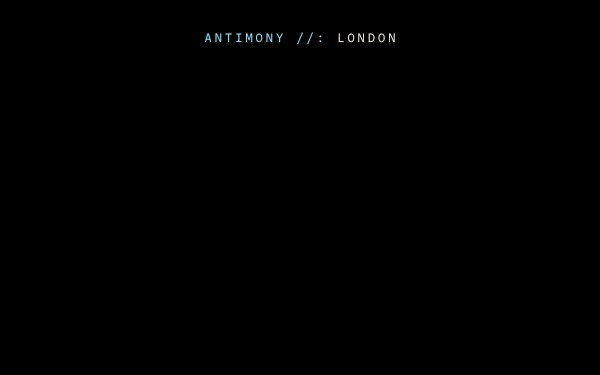
010.35 to 1.68 s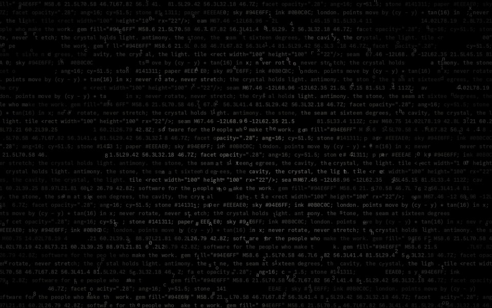
022.77 s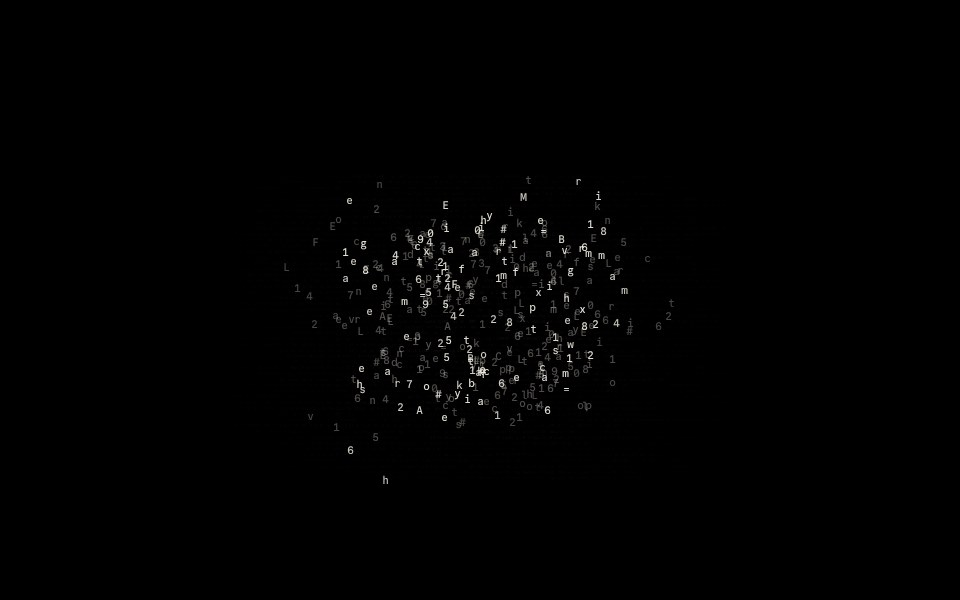
032.77 to 3.99 s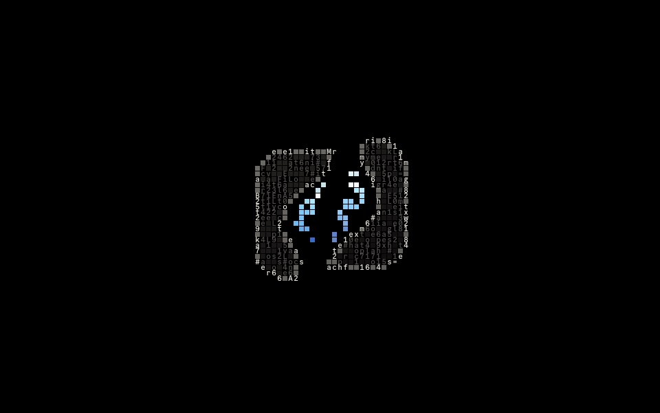
043.75 s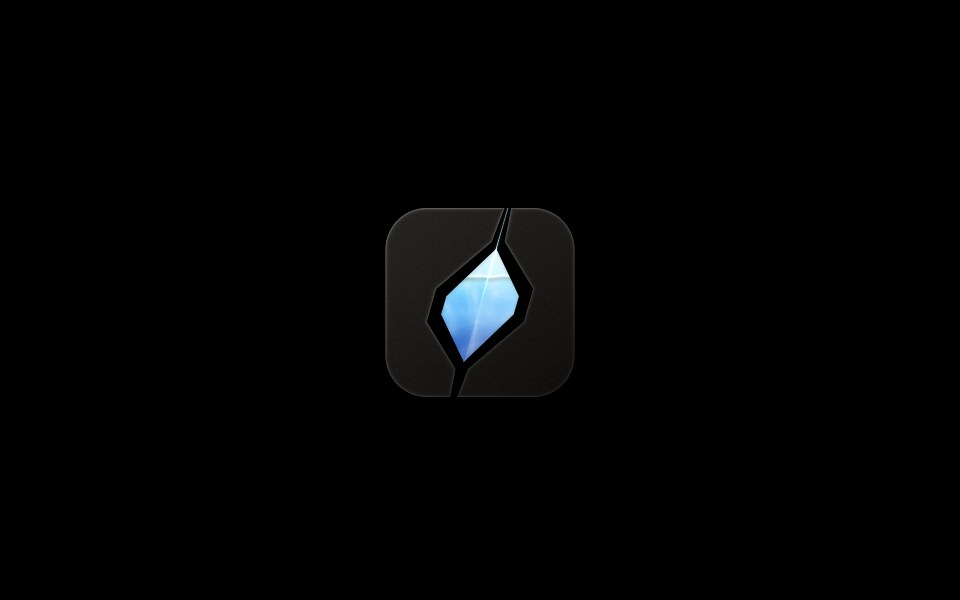
076.19 s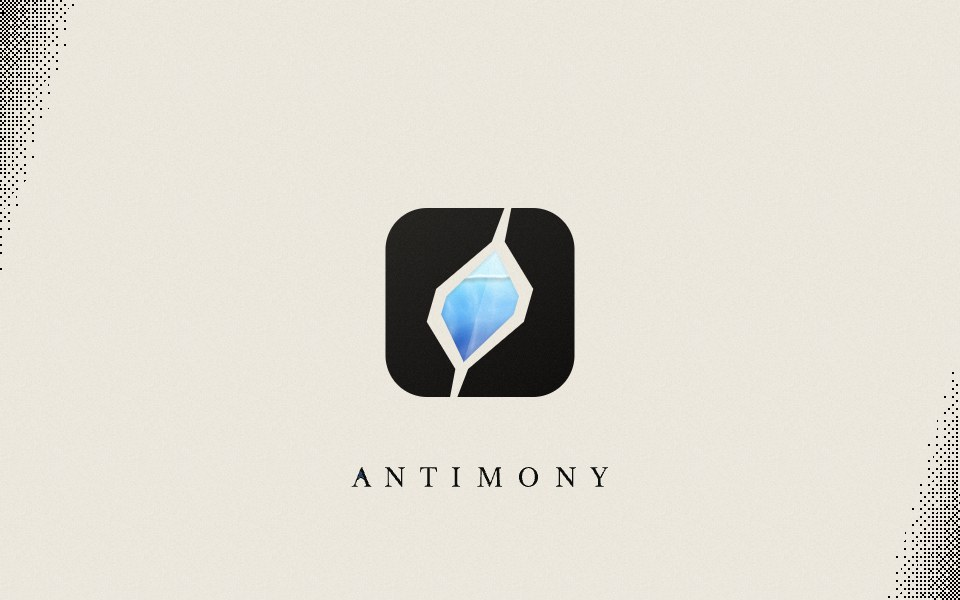
086.34 to 7.29 s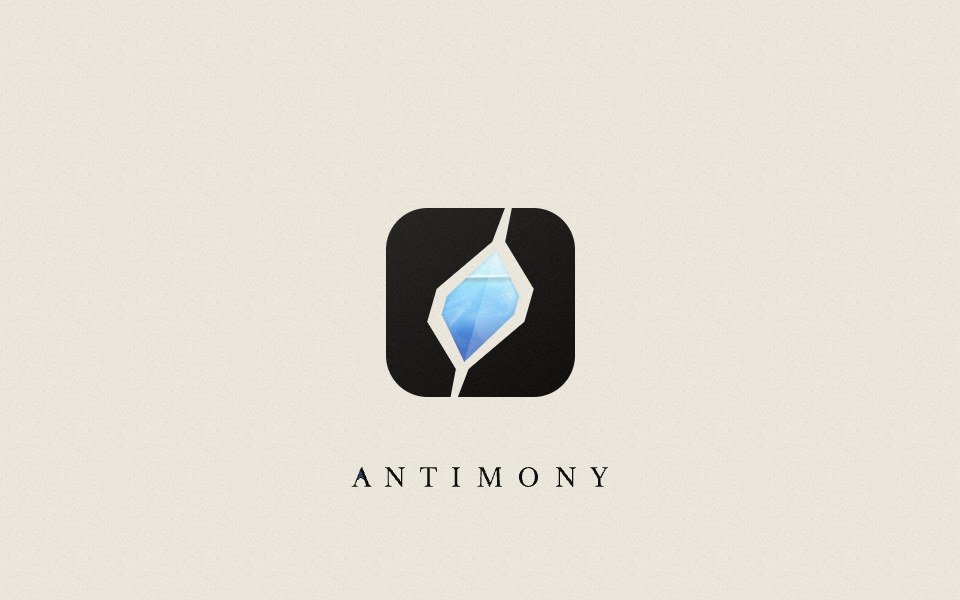
097.29 sThe crystal holds water and light. When the pointer moves over or near it, the water takes up the movement and sloshes with real inertia, then settles slowly.
It is two damped springs: the tilt of the surface at 0.8 cycles a second with a damping ratio of 0.09, and its level at 1.2 cycles with 0.12. The nearer the pointer, the more it moves.
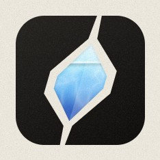
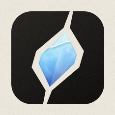
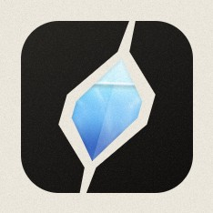
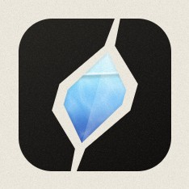
The stone can be chipped. Up to three shards come away, each turning to show one of the things Antimony makes, and each a link to it. It is the only place the website names them.
With a keyboard, the mark takes focus; Enter chips the next shard and Escape heals the stone. Under reduced motion every move is instant.
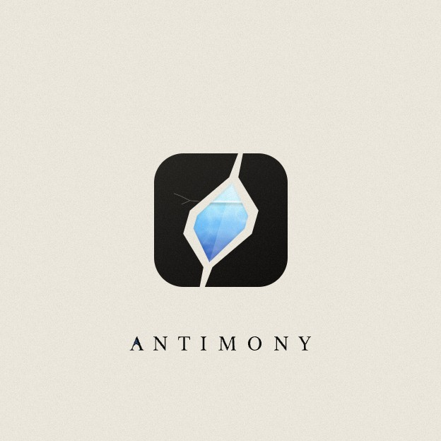
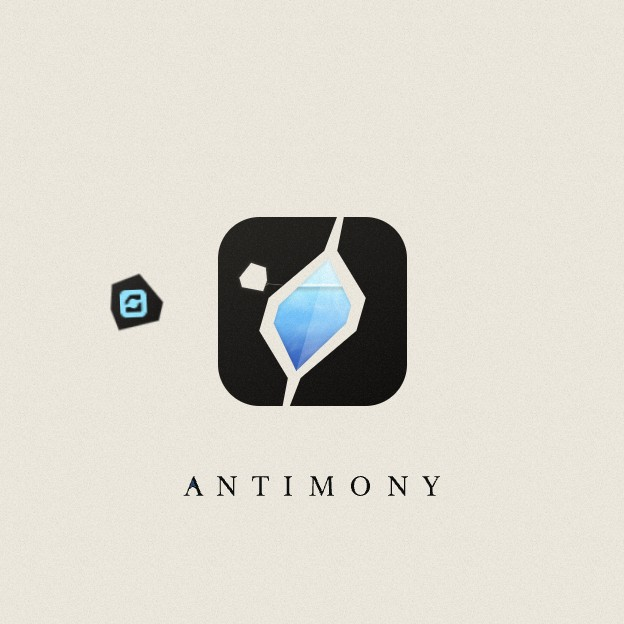
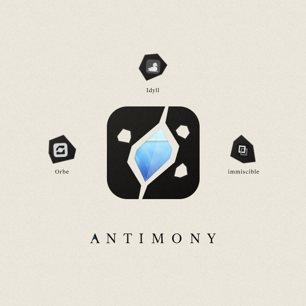
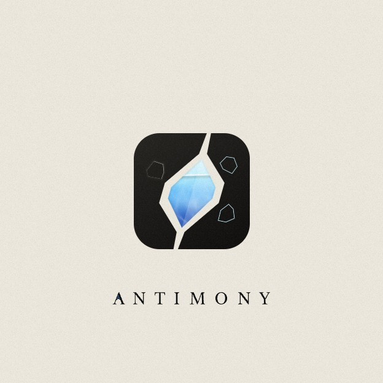
Every number here is read from the website's code. Movements ease out; nothing shorter than 0.6 s unless it is a deliberate cut, like the typed characters or the cells.
The curves, drawn: each starts slowly enough to feel like weight, and none of them passes its end.
| Move | Duration | Easing | For |
|---|---|---|---|
| Typed line | 70 ms a character | linear steps | The opening's first line; it holds 0.36 s and fades over 0.6 s. |
| Characters gather | 1.22 s | cubic-bezier(.55, 0, .2, 1) | The wall flows into the mark. |
| Snap to cells | 0.58 s, then 0.2 s | per cell, at random | Characters to squares, squares to the exact mark. |
| Join | 1.15 s | cubic-bezier(.64, 0, .28, 1) | Heavy to start, a long firm finish, no overshoot. |
| Cream | 0.95 s | cubic-bezier(.42, 0, .22, 1) | The ground floods out from the seam. |
| Page fade | 0.8 s | cubic-bezier(.25, .6, .3, 1) | On a second visit, or when the opening is skipped. |
| Shard turns | 1.5 s | cubic-bezier(.2, .7, .18, 1) | Out, over and into its place; the name follows after 1.15 s. |
| Shards return | 0.95 s, 110 ms apart | cubic-bezier(.55, 0, .25, 1) | Home, then the healing light fades over 1.7 s. |
| Water | 0.8 Hz and 1.2 Hz | damped springs, 0.09 and 0.12 | The tilt and the level of the surface. |